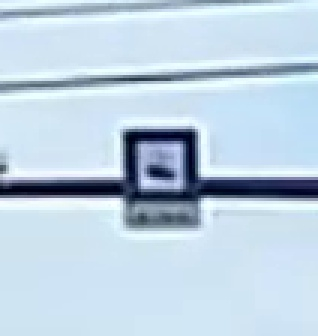
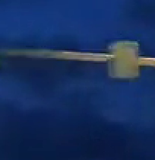

夜间两个横排灯／红绿转换
左：原m406完整交通灯支路；右：候选。相同源时间；放大窗取检测实际来源帧。离线渲染供视觉比较，不能据此声称实时15fps。
实际浏览器连续录屏：原版／候选（包含失败）
日间远灯及漏检
左：原m406完整交通灯支路；右：候选。相同源时间；放大窗取检测实际来源帧。离线渲染供视觉比较，不能据此声称实时15fps。
实际浏览器连续录屏：原版／候选（包含失败）
高架干扰与未知
左：原m406完整交通灯支路；右：候选。相同源时间；放大窗取检测实际来源帧。离线渲染供视觉比较，不能据此声称实时15fps。
实际浏览器连续录屏：原版／候选（包含失败）
弱灯与环境结构误检
左：原m406完整交通灯支路；右：候选。相同源时间；放大窗取检测实际来源帧。离线渲染供视觉比较，不能据此声称实时15fps。
实际浏览器连续录屏：原版／候选（包含失败）
实际浏览器测量
640宽，真实时间轴，经SSH转发，headless Edge实际页面canvas；每次仅1个图片请求在途，无重复帧计入新帧率。每片约13秒短窗，原版与候选顺序运行；数字有短窗波动，不是全片性能保证。
| 视频 | 处理fps | 网页新帧fps | 人车Hz | 道路Hz | 交通灯Hz | 采样灯观测最大龄ms |
|---|---|---|---|---|---|---|
| SC_YJ.mp4 | 14.91 | 13.16 | 13.92 | 7.76 | 3.73 | 602.1 |
| SC_BT.mp4 | 14.33 | 14.22 | 11.13 | 7.05 | 3.53 | 403.7 |
| SC_BT2.mp4 | 14.53 | 14.53 | 12.50 | 7.21 | 3.60 | 675.3 |
| SC_YJ2.mp4 | 14.92 | 14.70 | 12.38 | 7.07 | 3.65 | 530.3 |
交通灯一次观测约205–227ms，其中NPU约99–103ms，CPU几何/灯色约87–107ms；不是15Hz灯态检测。单灯观测率与总交通灯Hz不同。图龄从主机解码完成起算，超过600ms旧灯消失；不能视为摄像头到网页延迟。
真实页面及原始证据


原始帧、叠加帧及对应状态另存于evidence/visible，原录像不改写。
保留的失败
日间摄像头/信息牌、蓝调路侧装置仍被误检为灯体（UNKNOWN）；日间远灯与高架缺少可靠灯色；夜间后段跟踪中断。黄灯无可靠正例、熄灭不可由漏检推断。不能把更少的框或更多UNKNOWN算成准确率改善。




停止与回退
双击本目录“停止交通灯候选.cmd”，只停止身份一致的候选和其SSH转发。回退后双击原orangepi/oneclick/启动智驾录像演示.cmd；默认入口和m406源码未改。候选不会自动停止原演示，避免两套模型争用NPU。
完整结果JSON · 模型/参数/SHA清单 · 12固定帧＋LED结果 · 定向检查 · 本地/远端保护核对